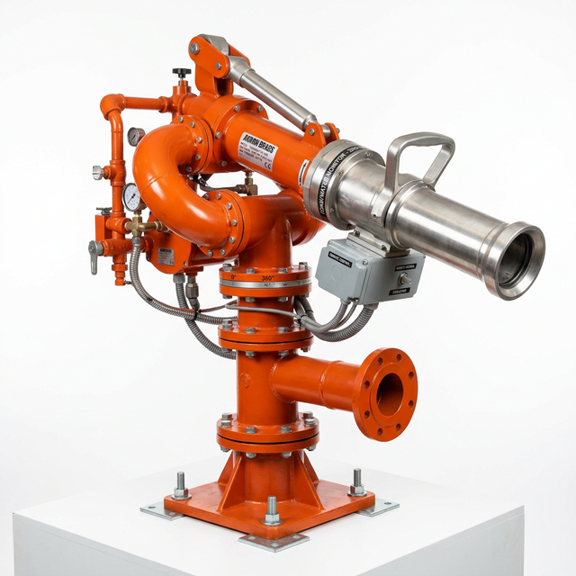

Fixed and oscillating large-capacity monitor nozzles and foam proportioning systems for wide-area fire suppression.
Request a QuoteDOOIL supplies an extensive range of fire monitor nozzles — from manually operated portable monitors to fully automated, oscillating, self-seeking turret monitors — designed for protection of open hazardous areas, tank farms, and process units.
Our foam monitors and proportioning systems are engineered to deliver the correct foam-water mixture instantly and reliably under worst-case conditions.

| Parameter | Range / Options |
|---|---|
| Monitor Type | Fixed, Oscillating (Electric/Pneumatic), Remote-Controlled Turret |
| Flow Rate | 500 LPM ~ 20,000+ LPM |
| Operating Pressure | 5 ~ 20 bar |
| Throw Distance | Up to 120 m (application-dependent) |
| Material | Ductile Iron, Bronze, Stainless Steel 316L |
| Nozzle Type | Straight-Stream / Fog / Foam-Aspirating / Multi-purpose |
| Proportioning | 1%, 3%, 6% (Inline Balancing, Around-the-Pump) |
| Drive System | Electric Motor / Hydraulic / Pneumatic / Manual |
| Environmental Rating | IP65 / IP67 / ATEX Zone 1 (optional) |
| Certification | UL, FM, EN 15493, NFPA 11 |
Foam monitors protecting floating-roof and cone-roof tanks in large petroleum storage areas.
Water curtain and foam monitor systems for liquefied gas exposure protection.
Oscillating turret monitors providing full-coverage foam suppression of process areas.
Automated oscillating foam-water monitors for rapid-response helicopter platform protection.
Deluge-type water spray and foam monitor protection of oil-filled power transformers.
Fixed and portable foam monitors covering flammable liquid vehicle loading areas.
Our specialists will model your hazard area and recommend the optimal monitor type, placement, and proportioning system.